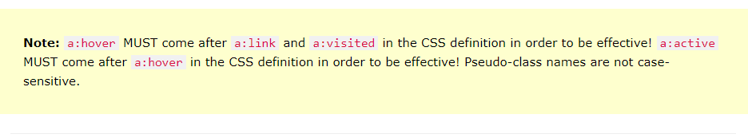

Lekce 2 - část 0
Class selectory
Nějaký h3 nadpis
Nějaký paragraf
Nějaký h4 nadpis
Nějaký h3 nadpis s třídou zvýraznění
Nějaký paragraf s třídou zvýraznění
Nějaký h4 nadpis s třídou zvýraznění
- prvek seznamu
- prvek seznamu zvýrazněný
Pseudo-classes
zápsis místo '.' je ':' Jsou již předvytvořené. Viz css soubor

Odkazy
Úkoly
nadpisům h5 a h6 přidej pomocí třídy různé vlastnosti
nadpis h5
nadpis h6
Předchozí část není
hlavní stránka
Další část
Další zdroje
Pseudo třídy